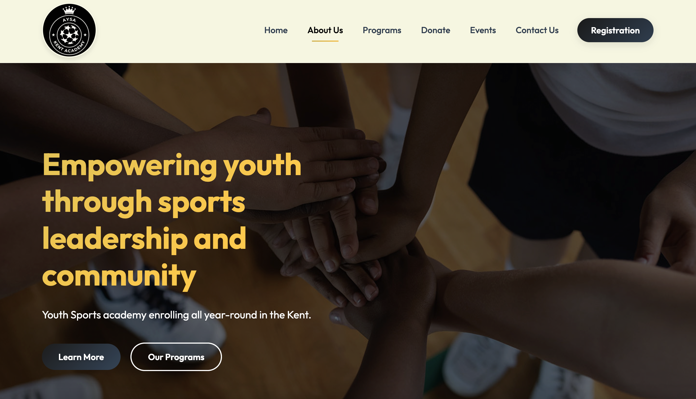

University of Texas Austin Website Redesign
10 weeks (Academic Quarter)
Individual project
Figma, Adobe XD, User Research Tools, Prototyping Software

This capstone project involved conducting comprehensive research and redesigning the University of Texas Austin website to improve user experience and accessibility. The project focused on understanding the needs of various user groups including students, faculty, staff, and prospective students.
The project began with extensive user research including surveys, interviews, and usability testing to identify pain points and opportunities for improvement. This research informed the design decisions and helped create a user-centered solution.
Based on the research findings, I developed several design solutions including improved information architecture, simplified navigation, enhanced mobile responsiveness, and better accessibility features. The redesign focused on creating a more intuitive and user-friendly experience.
Multiple iterations of wireframes and prototypes were created and tested with users to validate design decisions. This iterative process helped refine the solution and ensure it met user needs effectively.
The final design solution demonstrated significant improvements in usability metrics and user satisfaction scores. The project showcased my ability to conduct thorough research, apply design principles, and create user-centered solutions for complex problems.